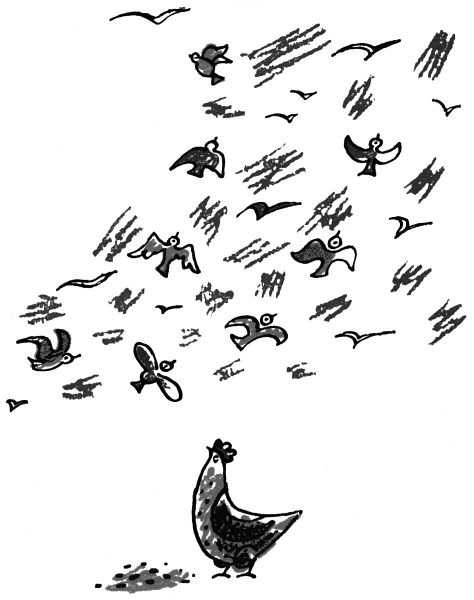

Pohádka ptačí
Kdepak, děti, to vy nevíte, co si ptáci povídají. Oni si totiž vypravují lidským jazykem jenom časně zrána, při východu slunce, kdy vy ještě spíte; později, za bílého dne, už nemají pokdy na mnoho řečí – to víte, to dá nějakou sháňku, tady zobnout zrníčko, tam vyhrabat žížalu nebo tuhle čapnout ve vzduchu mouchu. Takový ptačí tatínek aby si ulítal křídla, zatímco ptačí maminka musí doma opatrovat děti. Proto si ptáci povídají jenom časně zrána, když otevrou ve svých hnízdech okna, vyloží peřinky k vyvětrání a vaří si snídani.
„Brý ráno,“ křičí kos, co má hnízdo na borovici, na souseda vrabčáka, co bydlí v okapu. „Už je čas.“
„Vím, vím, vím,“ povídá vrabec. „Už abych lít, kde bych něco štíp, štíp, štíp, aby bylo co jíst, viď?“
„Vskutku, vskutku,“ brouká holub na střeše. „Jsou s tím starosti, brachu. Málo zrní, málo zrní.“
„Tak, tak,“ přizvukuje vrabec vylézaje z postýlky. „To dělají ta auta, víš? Dokud bylo koní víc, bylo všude rozsypáno zrní, ale teď? Teď auto přeletí a nenechá po sobě nic, nic, nic!“
„Jen smrdí, jen smrdí,“ vrká holub. „Zatrápený život, brr! Raději praštit tou rachotou, člověče! Co já se nakroužím a navrkám, a co za tu práci mám? Ani hrstku zrní. To jsou hrozné poměry.“
„Myslíš, že vrabci jsou na tom líp?“ čepýří se vrabec. „Já ti povím, kdybych tu neměl rodinu, já bych někam ulít –“
„Jako ten vrabec z Dejvic,“ ozval se z houští střízlík.
„Z Dejvic?“ řekl vrabec. „Tam mám jednoho známého, jmenuje se Filip.“
„To není ten,“ pravil střízlík. „Ten vrabec, co ulít, jmenoval se Pepík. Tak to vám byl takový ježatý vrabčák, ani se pořádně nemyl a nečesal a jenom celý den nadával: že prý je v Dejvicích nuda a otrava, a copak jiní ptáci, ti prý si na zimu letí na jih, takhle na Riviéru nebo do Egypta, jako špačci a čápi a vlaštovky a slavíci, jenom vrabec aby se po celý život dřel v Dejvicích. ‚A to já tak nenechám,‘ pokřikoval ten vrabec, co se jmenoval Pepík; ‚když si může letět do Egypta taková vlaštovka, co bydlí na Růžku, proč bych tam, lidičky, neletěl já? A just tam poletím, abyste věděli, jen co si sbalím svůj kartáček na zuby a noční košili a pálku a míčky, abych tam mohl hrát tenis. Počkejte, jak já to v tenise natřu Cochetovi a Koželuhovi a Tildenovi; já už mám na ně fortel a fintu, já budu dělat, jako bych vyhazoval míček, ale místo míče poletím já sám, a když po mně plácnou raketou, tak jim frnknu neboli pláchnu, víš? víš? víš? A když je všechny porazím, ožením se s bohatou Američankou a pak si koupím Valdštejnský palác a tam si udělám na střeše hnízdo, ale ne z nějaké obyčejné slámy, ale z rýžové slámy a marzolánu a ratafie a z mořské trávy a koňských žíní a veverčích ocásků, hečte!‘ – Tak se kasal ten vrabčák a každého rána povykoval, že má těch Dejvic už po krk a že poletí na Riviéru.“
„A letěl?“ ptal se z borovice kos.
„Letěl,“ pokračoval v houští střízlík. „Počkal jen do osmadvacátého října, aby slyšel hrát vojenskou muziku – na tu on si potrpěl –, a hned zrána se pustil na jih. Jenže vrabci nikdy na jih nelítají, a proto neznají tu pravou cestu. A ten vrabec Pepík neměl ani dost brků neboli peněz, aby mohl v hospodě přenocovat, to víte, vrabci jsou odjakživa proletáři, protože se po celý den jen tak proletují po střechách. Zkrátka, vrabec Pepík se dostal jen do Kardašovy Řečice a dál už nemohl, neměl ani findy; ještě byl rád, že mu vrabčí starosta v Kardašově Řečici přátelsky řekl: ‚Ty kujóne toulavá, ty budižkničemu, ty si myslíš, že v Kardašově Řečici máme dost koňských kobližek a kobylinců pro každého pobudu, krajánka, vandrovního čili poběhlíka? Chceš-li, abychom ti povolili pobyt v Kardašově Řečici, tak nesmíš zobat na náměstí ani před hospodou ani na silnici jako my starousedlíci, alebrž jenom za humny; a za byt se ti z moci ouřední vykazuje věchýtek slámy v kůlničce u popisného čísla padesát sedm. Tady podepiš ten konskripční list a syp, ať tě už nevidím.‘ – A tak se stalo, že vrabec Pepík z Dejvic, místo aby letěl na Riviéru, zůstal v Kardašově Řečici.“
„A je tam podnes?“ ptal se holub.

„Podnes,“ řekl střízlík. „Já tam mám tetičku a ta mi o něm povídala. Prý se jen posmívá kardašořečickým vrabcům a povykuje; to prý je holá nuda a otrava, být vrabcem v Kardašově Řečici, ani tramvaj prý tam nemají jako v Dejvicích, ani tolik aut, ani hřiště Slávie a Sparty, no, dočista nic; a že ho ani nenapadne, aby umřel dlouhou chvílí v Kardašově Řečici, on že má pozvání na Riviéru a že jen čeká, až mu dojdou z Dejvic peníze. A tolik toho napovídal o Dejvicích a Riviéře, že i v Kardašově Řečici začali vrabci věřit, že by jim bylo jinde líp, a proto si už nehledí svého zobání a jen čimčarují a povykují a reptají, jako to dělají vrabci všude na světě, a říkají: ‚Všude jinde líp, líp, líp!‘“
„Ba,“ ozvala se sejkorka sedící v dřínovém keři, „jsou takoví divní ptáci. Tuhle u Kolína, v takovém úrodném kraji, žila jedna vlaštovka a ta se dočetla v novinách, že u nás se dělá všechno špatně, ale zato v Americe, panečku, tam jsou jinačí filutové, co všechno dovedou, a kdesi cosi. Tak si ta vlaštovka vzala do hlavy, že se do té Ameriky musí podívat. A jela tam.“
„Jak?“ zeptal se honem střízlík.

„To nevím,“ pravila sejkorka, „nejspíš po lodi. A třeba také po vzducholodi. To si mohla udělat na bříšku vzducholodi hnízdo neboli kabinu s takovým okýnkem, aby mohla vystrkovat hlavu a třeba i plivnout dolů. Zkrátka, za rok se zase vrátila a říkala, že byla v Americe a tam že je všechno jinačí než u nás; kdepak, to prý není srovnání, jaký tam je pokrok, například žádní skřivani prý tam nejsou, a domy prý tam jsou tak strašně vysoké, že kdyby měl vrabec na střeše hnízdo a z toho hnízda mu vypadlo vajíčko, že by to vajíčko padalo tak dlouho, než by dopadlo, že by se z něho cestou vylíhl mladý vrabec a dorostl by a oženil by se a měl by hromadu dětí a zestárl by a umřel by v požehnaném věku, takže by dolů na chodník místo vrabčího vajíčka dopadl starý mrtvý vrabec. Tak vysoké domy prý tam jsou. A taky ta vlaštovka říkala, že v Americe se všechno staví z betonu a že ona se tomu naučila; ať jen prý se přijdou všechny vlaštovky podívat, že ona jim ukáže, jak se staví vlaštovčí hnízdo z betonu, a ne jen tak z bláta, jako to ty hloupé vlaštovky dělaly doposud. Tak se vám sletěly vlaštovky až z Mnichova Hradiště a Čáslavě a Přelouče, z Českého Brodu a z Nymburka, ba i ze Sobotky a Čelákovic; to bylo tolik vlaštovek, že pro ně lidi museli napnout sedmnáct tisíc tři sta čtyřicet devět metrů telefonního a telegrafního drátu, aby ty vlaštovky měly na čem sedět. A když byly všechny vlaštovky pohromadě, řekla ta amerikánská vlaštovka. ‚Tak dávejte, hoši a holky, pozor, jak se v Americe staví domy neboli hnízda z betonu. To se nejdřív nanosí hromádka cementu. Potom se nanosí hromádka písku. Pak se na to naleje voda a udělá se taková kaše, a z té kaše se staví moderní hnízdo. Ale když nemáte cement, tak si nebudete stavět hnízdo z betonu, ale jenom z malty. To se udělá kaše z vápna a písku, ale to vápno musí být zhašené. Nejdřív vám ukážu, jak se hasí vápno.‘ To řekla a frnk, už letěla k novostavbě, co stavěli dělníci, pro nehašené vápno. Vzala zrnko vápna do zobáčku a frnk, už s ním letěla zpátky. Ale protože v zobáčku je vlhko, začalo se jí to vápno v puse hasit a syčet a pálit. Vlaštovka se lekla, upustila to zrníčko vápna a vykřikla: ‚Tak, teď už víte, jak se hasí vápno. Jejdanečku, to pálí! Kryndypána, to štípe! Kruciturci jejejej šmankote ochochoch au lalala ouha krucinál jemine hú safra fujloty propánajána jemináčku ojej achich namoutě můj ty tondo uf panenko skákavá krucifagot ouvej mami ójejkote echech lidičky brrr krucipísek ujuj propánečka sakulente óhoho ajaj krutiputi, teda takhle se hasí vápno.‘ Když ji ostatní vlaštovky slyšely tak tuze naříkat a lamentovat, ani nečekaly, co bude dál, zatřásly ocáskem a letěly domů. ‚To by tak hrálo,‘ řekly si, ‚abychom si taky tak spálily zobák!‘ A proto si vlaštovky podnes staví hnízda z bláta, a ne z betonu, jak je tomu chtěla naučit ta vlaštovka z Ameriky.“
„Kmotro sejkorko,“ ozvala se paní kosová, „když už poletíte na trh, kupte mi tam kilo žížal, ale pěkných dlouhých; já na to dnes nemám pokdy, protože musím učit lítat své děti.“
„To vám, sousedko, ráda udělám,“ řekla sejkorka. „To já, má zlatá, vím, co to dá práce, naučit děti slušně lítat.“

„A že nevíte,“ řekl špaček na bříze, „kdo naučil nás ptáky lítat? Tak já vám to povím; já to mám od karlštejnského havrana, co sem tehdy přilít, když byly ty velké mrazy. Ten havran je už sto let starý a slyšel to od svého dědečka, kterému to říkal jeho pradědeček, který to měl od prastrýčka své babičky z maminčiny strany, takže to je svatosvatá pravda. Teda jak víte, někdy v noci je vidět, jak padá hvězda. Ale některá ta padající hvězda není žádná hvězda; je to zlaté andělí vejce. A protože to vejce padá až z nebe, rozžhaví se tím velkým pádem a svítí jako oheň. A to je svatosvatá pravda, protože mně to říkal ten karlštejnský havran. Jenže lidé těm andělím vejcím říkají jaksi jinak, nějak jako metr nebo montér nebo mentor či jak.“
„Meteory,“ řekl kos, který to věděl od Kubíkovic Mirka.
„Tak,“ souhlasil špaček. „A tehdy ještě ptáci neuměli lítat, ale běhali po zemi jako slepice. A když viděli padat z nebe takové andělí vejce, řekli si, že by je chtěli vysedět, aby viděli, co se z něho vylíhne za ptáka. A to je opravdická pravda, protože to tak říkal ten havran. Jednou za večera zrovna o tom hovořili, když docela blízko za lesem bums! spadlo z nebe zlaté a zářící vejce, jen to svištělo. Tu se tam všichni rozběhli, nejvíc vpředu čáp, protože má nejdelší nohy. A čáp to zlaté vejce našel a vzal je do rukou; ale ono bylo tím pádem celé žhavé, takže si čáp popálil obě ručičky, ale přece jen donesl to řeřavé vajíčko mezi ptáky. Potom honem hups! skočil do vody, aby si ochladil popálené ručičky. Proto se od té doby čápi brodí ve vodě, aby si chladili pařátky. To mně povídal ten havran.“
„A co povídal dál?“ ptal se střízlík.
„Potom,“ pokračoval špaček, „se přikolíbala divoká husa, aby to horoucí vejce vyseděla. Ale to vejce bylo ještě celé říčné a žhavé, takže si husa popálila bříško a musela skočit do rybníka, aby si to bříško ochladila. Proto husy podnes plavou bříškem na vodě. A pak přišel jeden ptáček za druhým a sedl si na to andělí vejce, aby je vyseděl.“
„Střízlík taky?“ ptal se střízlík.

„Taky,“ řekl špaček. „Všichni ptáci na světě na tom vejci seděli, aby je vyseděli. Jenom když řekli slepici, že je na ní řada, aby šla sedět, povídala slepice: ‚Jak? Jak? Copak, copak, copak mám na to kdy? Já musím zobat. Kdepak, kdepak! To to to ne. To bych byla hlupák.‘ A nešla vysedět andělí vejce. A když se všichni ptáci na tom zlatém vejci vystřídali, vyklubal se z něho boží anděl. A když se vyklubal, nezačal zobat ani pípat jako jiní ptáci, ale vzletěl rovnou k nebi a zpíval Aleluja Hosana. Potom řekl: ‚Ptáčkové, co vám mám za vaši lásku dát, že jste mě vyseděli? Za to budete ode dneška lítat jako andělé. Helejte, to musíte takhle zamávat křídly a šups! už to letí. Tak pozor: jedna, dvě, tři!‘ A když řekl tři, začali všichni ptáci lítat a lítají až podnes. Jen slepice neumí lítat, protože nechtěla sedět na andělím vejci. A to všechno je svatá pravda, protože to tak povídal karlštejnský havran.“
„Tak pozor,“ řekl kos. „Jedna, dvě, tři!“ A tu všichni ptáčci potřásli ocáskem, mávli křídly a vzletěli, každý za svým zpěvem a svým živobytím, jak je tomu naučil boží anděl.